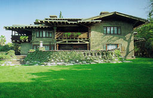
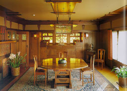
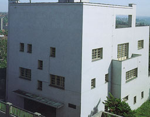
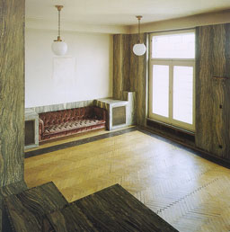
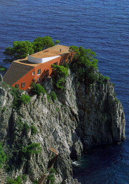
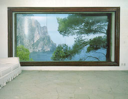
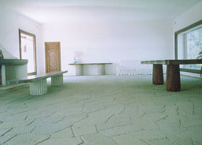
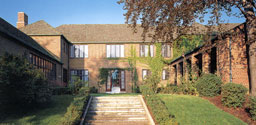
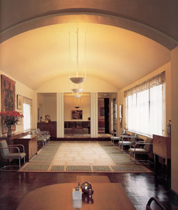

Gamble house, Pasadena, California, 1908
Greene & Greene

Houses of the Century
Anatxu Zabalbeascoa |
Charles and Henry Greene have built several houses
on the California coast during the first two decades of this
century. Horizontality characterises the houses. Timber was mostly
used as the main construction material. Also in this house overlapping
roofs dominate the wooden structure and characterizes the horizontality.
The interior gives a dark expression caused by the dark wooden
walls and the filtering effect of the stained glass windows as
you can see on the right picture. The main window lights up the
left wall but the right wall seems to look even darker. |
 |
Müller house, Prague, 1930
Adolf Loos

Houses of the Century
Anatxu Zabalbeascoa |
Typical for this house is its cubic volume without
any details. Adolf Loos regarded ornament as a crime. The composition
of the exterior is independent of those in the interior.. The
dimensions of the rooms (including the height) depend on the
use of the different rooms. More public rooms are higher than
the more intimate ones. On the right photograph you see the interior
of the house. The structure of the materials characterises the
room. Light is coming from a window in the corner of the room.
As You can see on the left picture the composition of the facade
is obtained by the position of the windows. |
 |
Villa Malaparte, Capri, Italy, 1938
Adalberto Libera
Houses of the Century
Anatxu Zabalbeascoa |
The house, build for a writer Curzio Malaparte
is located on the edge of a cliff. Starting from a natural rock,
a stairway leads up to the roof terrace of the house. The upper
floor of the house is the only one from the three-floor-building
which takes full advantage of its unique location. The views
are very beautiful. As you can see on the first picture on the
right, the landscapes are framed in the windows like works of
art. On the other picture you see daylight coming into the very
empty and light (white painted) room. |

 |
|
Saarinen House, Cranbrook Academy of Art, Bloomfield Hills,
Michigan, 1928-1929
Elien SaarinenAmerican
Masterworks
Frampton / Larkin
|
In 1924 Elien Saarinen was commissioned to
design a masterplan for two high schools (one for boys and one
for girls) and an academy of art. The client wanted the complex
to be a selfsufficient microcosm so also residential accommodation
for the faculty and staff had to be built. The whole project
became an enlargement of the design of Saarinen's own residence
after he assumed directorship of the academy. The architect's
wife and children designed, build and made the interior like
the furniture, the wall- and ceiling treatments and the draperies.
The house shows the creative capacity of the family and the ideology
of the academy. On the picture on the right the interior of the
house can be seen. Large windows provide for daylight. Artificial
light directed to the ceiling makes sure the contrast between
the walls (with the big windows) and the ceiling doesn't become
too large. |
 |
|
|
|
|
|
|
|
|
|
|
|
|